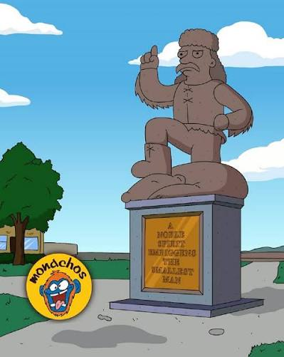
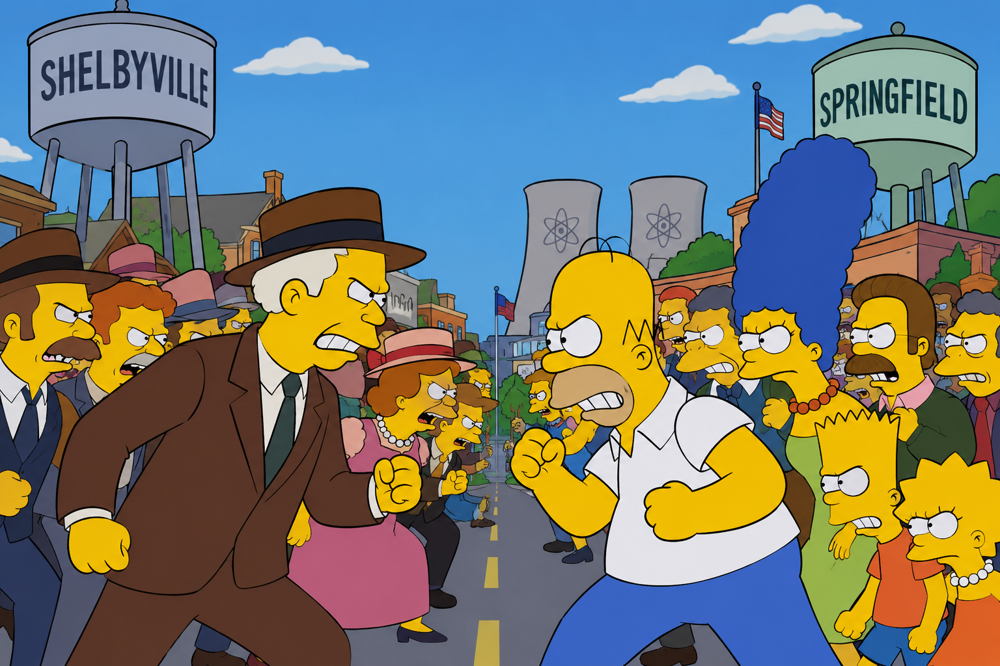
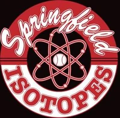
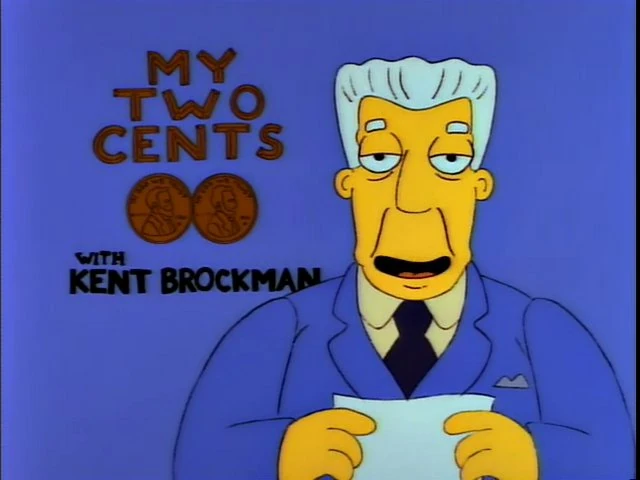
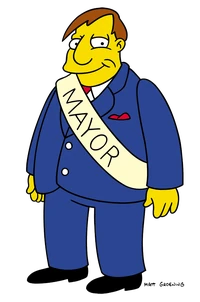
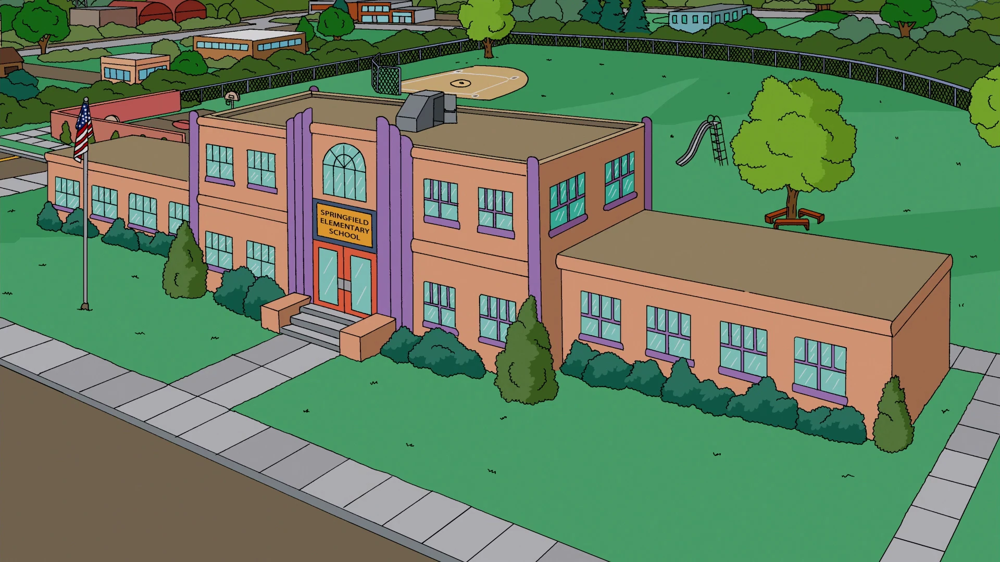
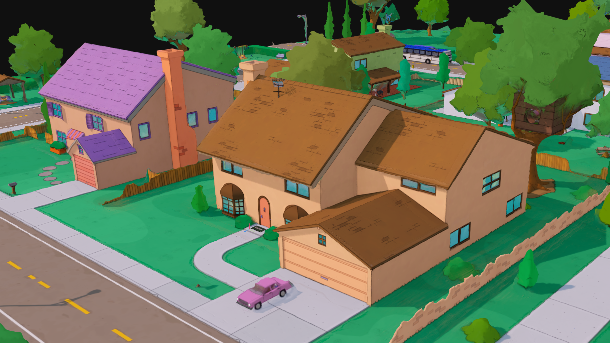
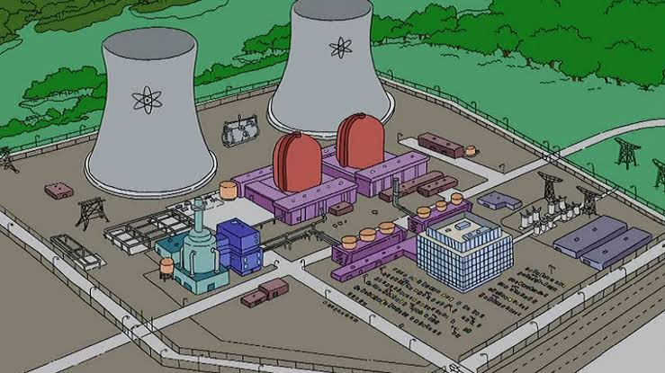
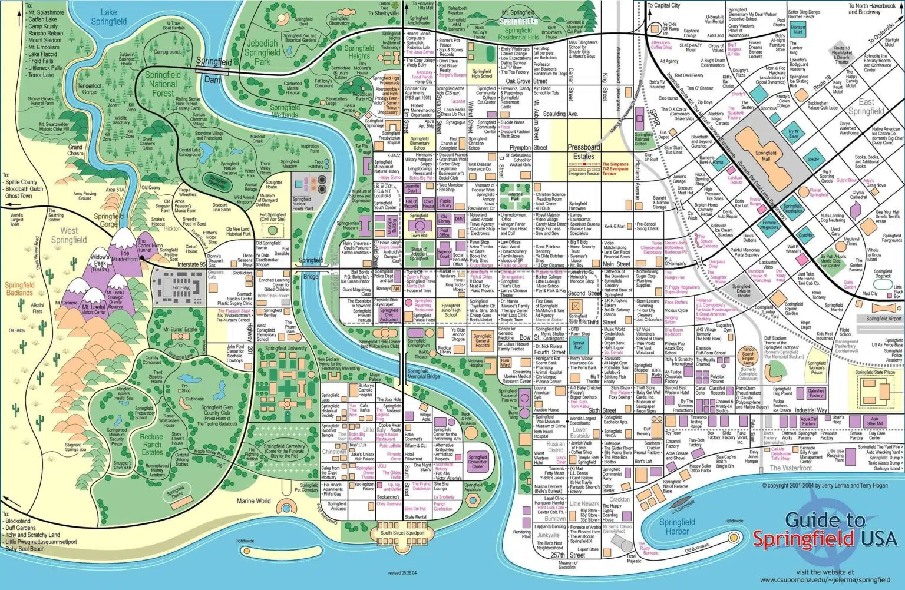

Springfield es el nombre de la ciudad ficticia en donde la serie de televisión de dibujos animados estadounidense Los Simpsons está ambientada.
Historia de la ciudad

Springfield fue fundada en 1796 por colonos que buscaban un paso hacia Maryland tras malinterpretar un pasaje de la Biblia.En realidad buscaban Nueva Sodomia. El pionero Jeremias Springfield fundó el pueblo y se convirtió en una figura local.
Rivalidad Con Shelbyville
Su ciudad rival, Shelbyville, fue fundada por su compañero de viaje y luego enemigo, Shelbyville Manhattan. La rivalidad entre ambas se remonta a cuando ambas ciudades fueron fundadas y se originó por las diferencias en el modo de vida que querían llevar cada uno de ellos. Shellbyville Manhattan quería llevar una vida de diversión y quería que los hombres pudieran casarse con sus primas, mientras que Jeremias Springfield quería mantener una vida casta y un gobierno justo.

Caracteristicas Principales
LA CIUDAD CUENTA CON
un equipo de baseball llamado los Isótopos de Springfield
una emisora tambien conocida como Canal 6
un alcalde que lidera la ciudad
una escuela primaria donde estudian los niños de la ciudad




Barrios y Zonas
Springfield cuenta con varios barrios y zonas, entre los cuales se destacan:
- El centro de la ciudad, donde se encuentran la mayoría de los negocios y edificios gubernamentales.
- La zona residencial, donde viven la mayoría de los habitantes de Springfield.
- El barrio industrial, donde se encuentran las fábricas y plantas de producción.
- El parque central, un espacio verde para el esparcimiento y actividades al aire libre.


MAPA DE SPRINGFIELD
